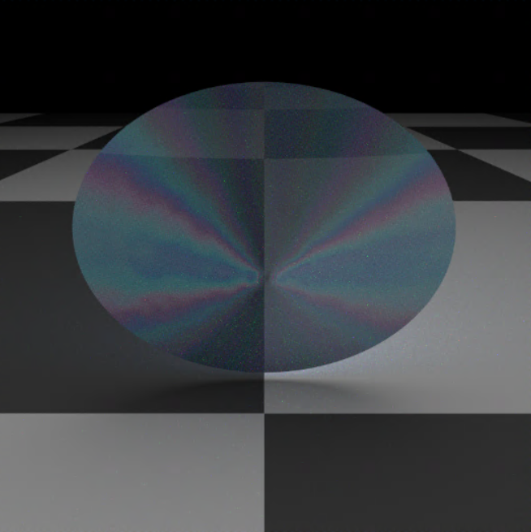
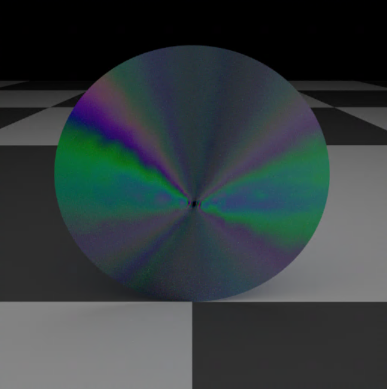

Diffraction
Simulating Diffraction effects with PBRT. The idea is to produce colorful diffraction effects seen on a typical CD drive.

A transparent surface that diffracts

Colors of a peacock feather

Simulating Diffraction effects with PBRT. The idea is to produce colorful diffraction effects seen on a typical CD drive.
A transparent surface that diffracts

Colors of a peacock feather
